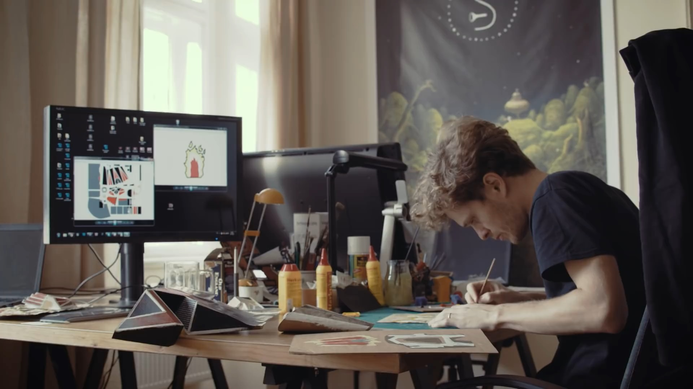

Los juegos independientes son creados por desarrolladores de juegos independientes, en lugar de aquellos que trabajan para grandes estudios de desarrollo o editores como Sega y Ubisoft.
No importa si son 2D o 3D, plataformas de araña o tiradores de acción, siempre que un editor AAA (Triple A) no te obligue a trabajar durante los fines de semana para cumplir con una fecha límite de vacaciones, eres un indie desarrollador.
¿SOLO PUEDES SER UN DESARROLLADOR INDIE SI TRABAJAS SOLO?

Indie puede ser la abreviatura de independiente, pero eso no significa que tengas que trabajar solo para considerarte un desarrollador independiente.
Un estudio de desarrollo independiente podría contratar a todo un equipo de diseñadores, programadores, artistas e ingenieros de sonido para ayudar a repartir la carga, mientras que un desarrollador independiente tendrá que convertirse en un experto en todos los oficios.
Ventajas
Libertad creativa
El factor más importante a los ojos de los editores de renombre es cuánto dinero es probable que genere su juego. Como desarrollador independiente, el dinero no tiene que ser la única motivación detrás de tu proyecto. No importa qué tipo de juego tengas en mente: puedes experimentar con una premisa tonta o creativa y crear el juego que deseas solo por el placer de hacerlo.
No hay cultura de "Crunch"
La industria de los juegos tiene un problema bien documentado con la cultura crunch, ya que los empleados de algunos estudios trabajan hasta 100 horas a la semana para cumplir con los estrictos plazos de lanzamiento.
Como desarrollador independiente, es posible que aún tengas plazos que cumplir, pero puedes trabajar en tu proyecto con la frecuencia que desees.
Crédito y reconocimiento
Cuando se lanza un nuevo Final Fantasy, Square Enix es el centro de atención. El resto del equipo de desarrollo está relegado a los créditos finales, que si somos honestos con nosotros mismos, todos nos saltamos si tenemos la opción.
Como desarrollador independiente, el éxito de tu juego es tu éxito. Si creas el próximo éxito independiente que marca tendencia, es tu nombre el que está en las luces, no tus editores.
#DevQuest
Es una serie de videos que trata sobre los diferentes tipos de desarrollo indie actual